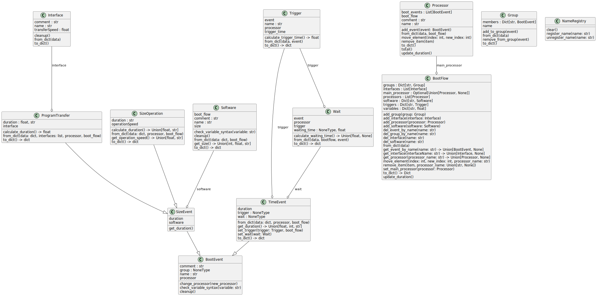

src.bootflow package
Class Diagram
{kind=link}
Submodules
src.bootflow.boot_event module
- class src.bootflow.boot_event.BootEvent(name: str, processor, comment='')[source]
Bases:
objectA class to represent a Boot Event.
Attributes:
- namestr
The name of the boot event.
- processorobject
The processor associated with the boot event.
- commentstr, optional
A comment for the boot event (default is “”).
- groupNoneType
Placeholder attribute to define the group of the boot event.
- change_processor(new_processor)[source]
Changes the processor of the boot event to a new processor.
Parameters:
- new_processorobject
The new processor to be assigned.
Returns:
None
src.bootflow.boot_flow module
- class src.bootflow.boot_flow.BootFlow[source]
Bases:
objectA class to represent the boot flow, managing processors, interfaces, triggers, groups, variables, and software.
Attributes:
- processorsList[Processor]
A list of processors in the boot flow.
- interfacesList[Interface]
A list of interfaces in the boot flow.
- triggersDict[str, Trigger]
A dictionary of triggers keyed by their names.
- groupsDict[str, Group]
A dictionary of groups keyed by their names.
- variablesDict[str, float]
A dictionary of variables and their values.
- softwareDict[str, Software]
A dictionary of software keyed by their names.
- main_processorUnion[Processor, None]
The main processor in the boot flow.
- add_group(group: Group)[source]
Adds a group to the boot flow.
Parameters:
- groupGroup
The group to be added.
- add_interface(interface: Interface)[source]
Adds an interface to the boot flow.
Parameters:
- interfaceInterface
The interface to be added.
- add_processor(processor: Processor)[source]
Adds a processor to the boot flow and sets it as the main processor if it’s the first one added.
Parameters:
- processorProcessor
The processor to be added.
- add_software(software: Software)[source]
Adds a software to the boot flow.
Parameters:
- softwareSoftware
The software to be added.
- del_event_by_name(name: str)[source]
Deletes an event by its name.
Parameters:
- namestr
The name of the event to be deleted.
- del_group_by_name(name: str)[source]
Deletes a group by its name.
Parameters:
- namestr
The name of the group to be deleted.
- del_interface(name: str)[source]
Deletes an interface by its name.
Parameters:
- namestr
The name of the interface to be deleted.
- del_software(name: str)[source]
Deletes a software by its name.
Parameters:
- namestr
The name of the sofware to be deleted.
- classmethod from_dict(data)[source]
Creates a BootFlow instance from a dictionary.
Parameters:
- dataDict
The dictionary containing boot flow data.
Returns:
- BootFlow
The BootFlow instance created from the dictionary.
- get_event_by_name(name: str) BootEvent | None[source]
Retrieves an event by its name.
Parameters:
- namestr
The name of the event to be retrieved.
Returns:
- Union[BootEvent, None]
The event if found, otherwise None.
- get_interface(interfaceName: str) Interface | None[source]
Retrieves an interface by its name.
Parameters:
- interfaceNamestr
The name of the interface to be retrieved.
Returns:
- Union[Interface, None]
The interface if found, otherwise None.
- get_processor(processor_name: str) Processor | None[source]
Retrieves a processor by its name.
Parameters:
- processor_namestr
The name of the processor to be retrieved.
Returns:
- Union[Processor, None]
The processor if found, otherwise None.
- move_element(index: int, new_index: int, processor_name: str)[source]
Moves an element within a processor’s boot events from one index to another.
Parameters:
- indexint
The current index of the element.
- new_indexint
The new index of the element.
- processor_namestr
The name of the processor containing the element.
- remove_item(item, processor_name: str | None = None)[source]
Removes an item from the boot flow or a specific processor.
Parameters:
- itemobject
The item to be removed.
- processor_nameUnion[str, None], optional
The name of the processor from which the item should be removed (default is None).
- set_main_processor(processor: Processor)[source]
Sets the main processor of the boot flow.
Parameters:
- processorProcessor
The processor to be set as the main processor.
src.bootflow.group module
- class src.bootflow.group.Group(name)[source]
Bases:
objectA class to represent a group of boot events.
Attributes:
- namestr
The name of the group.
- membersDict[str, BootEvent]
A dictionary of group members keyed by their event names.
- add_to_group(event)[source]
Adds an event to the group.
Parameters:
- eventBootEvent
The event to be added to the group.
- classmethod from_dict(data)[source]
Creates a Group instance from a dictionary.
Parameters:
- datadict
The dictionary containing group data.
Returns:
- Group
The Group instance created from the dictionary.
src.bootflow.interface module
- class src.bootflow.interface.Interface(name: str, transferSpeed: float, comment='')[source]
Bases:
objectA class to represent an interface with a name and transfer speed.
Attributes:
- namestr
The name of the interface.
- transferSpeedfloat
The transfer speed of the interface.
- commentstr, optional
Additional comments about the interface (default is an empty string).
src.bootflow.name_registry module
- class src.bootflow.name_registry.NameRegistry[source]
Bases:
objectA registry to manage unique names.
Attributes:
- _namesset
A set to store unique names.
src.bootflow.processor module
- class src.bootflow.processor.Processor(name: str, boot_flow, comment: str = '')[source]
Bases:
objectManages a sequence of boot events that represent different stages in a boot flow process.
Attributes:
- namestr
The name of the processor, which must be unique.
- boot_flow :
The boot flow object associated with this processor.
- commentstr
An optional comment or description of the processor.
- boot_eventsList[BootEvent]
A list of boot events associated with the processor.
- add_event(event: BootEvent)[source]
Adds a boot event to the processor’s list of events.
Parameters:
- eventBootEvent
The boot event to add.
- classmethod from_dict(data, boot_flow)[source]
Creates a Processor object from a dictionary representation.
Parameters:
- datadict
A dictionary containing the processor’s data.
- boot_flow :
The boot flow object associated with the processor.
Returns:
- Processor :
A new Processor object initialized with the data from the dictionary.
- move_element(index: int, new_index: int)[source]
Moves a boot event from one position to another within the processor’s list of events.
Parameters:
- indexint
The current index of the event to move.
- new_indexint
The new index to move the event to.
Raises:
- IndexError
If either index or new_index is out of range.
- remove_item(item)[source]
Removes a specific boot event from the processor’s list of events.
Parameters:
- itemBootEvent
The boot event to remove.
- to_dict()[source]
Converts the processor object into a dictionary format.
Returns:
- dict :
A dictionary representation of the processor, including its name, comment, and boot events.
src.bootflow.program_transfer module
- class src.bootflow.program_transfer.ProgramTransfer(name: str, software: Software, interface: Interface, processor, comment: str = '')[source]
Bases:
SizeEventRepresents a program transfer event in the boot flow, which is responsible for transferring software to a processor via an interface.
Inherits from:
SizeEvent : The base class for events related to size-based operations.
Attributes:
- interfaceInterface
The interface used for the program transfer.
- durationfloat
The calculated duration of the transfer in milliseconds.
- calculate_duration() float[source]
Calculates the duration of the program transfer based on the software size and the interface transfer speed.
Returns:
- float :
The duration of the transfer in milliseconds, or “-” if the software size is not available or the software/interface was deleted.
- classmethod from_dict(data: dict, interfaces: list, processor, boot_flow)[source]
Creates a ProgramTransfer object from a dictionary representation.
Parameters:
- datadict
A dictionary containing the ProgramTransfer event data.
- interfaceslist
A list of available interfaces to match against the provided interface name.
- processor :
The processor associated with the ProgramTransfer event.
- boot_flow :
The boot flow object containing available software and groups.
Returns:
- ProgramTransfer :
A new ProgramTransfer object initialized with the data from the dictionary.
src.bootflow.size_event module
- class src.bootflow.size_event.SizeEvent(name: str, software: Software, processor, comment: str = '')[source]
Bases:
BootEventRepresents an event in the boot flow that involves software size-related operations.
Inherits from:
BootEvent : The base class for all boot flow events.
Attributes:
- softwareSoftware
The software associated with the size event.
src.bootflow.size_operation module
- class src.bootflow.size_operation.SizeOperation(name: str, software: Software, operationSpeed, processor, comment: str = '')[source]
Bases:
SizeEventRepresents an operation in the boot flow that involves the processing of software based on its size and a specified operation speed.
Inherits from:
SizeEvent : The base class for events related to size-based operations.
Attributes:
- operationSpeedfloat or str
The speed at which the size operation is performed. Can be a direct value or a variable name.
- durationfloat or str
The calculated duration of the operation in milliseconds.
- calculate_duration() float | str[source]
Calculates the duration of the size operation based on the software size and the operation speed.
Returns:
- float or str :
The duration of the operation in milliseconds, or “-” if the size or speed is unavailable or the software was deleted.
- classmethod from_dict(data: dict, processor, boot_flow)[source]
Creates a SizeOperation object from a dictionary representation.
Parameters:
- datadict
A dictionary containing the SizeOperation event data.
- processor :
The processor associated with the SizeOperation event.
- boot_flow :
The boot flow object containing available software and groups.
Returns:
- SizeOperation :
A new SizeOperation object initialized with the data from the dictionary.
src.bootflow.software module
- class src.bootflow.software.Software(name: str, size, boot_flow, comment: str = '')[source]
Bases:
objectRepresents software used in the boot flow, including its name, size, and associated metadata.
Attributes:
- namestr
The name of the software.
- sizeint, float, or str
The size of the software, which can be a numeric value or a variable.
- boot_flow :
The boot flow instance associated with this software.
- commentstr
An optional comment or description of the software.
- static check_variable_syntax(variable: str)[source]
Validates the syntax of a variable name.
Parameters:
- variablestr
The variable name to be checked.
Raises:
- ValueError
If the variable syntax is invalid. Valid syntax must start with ‘$’ and contain only alphanumeric characters and underscores.
- classmethod from_dict(data: dict, boot_flow)[source]
Creates a Software object from a dictionary representation.
Parameters:
- datadict
A dictionary containing the Software instance data.
- boot_flow :
The boot flow instance associated with this software.
Returns:
- Software :
A new Software object initialized with the data from the dictionary.
src.bootflow.time_event module
- class src.bootflow.time_event.TimeEvent(name: str, duration, processor, comment: str = '')[source]
Bases:
BootEventRepresents an event in the boot flow that involves a specific duration of time, and optionally, a trigger and wait condition.
Inherits from:
BootEvent : The base class for all boot flow events.
Attributes:
- durationfloat, int, or str
The duration of the time event, which can be a numeric value or a variable name.
- triggerTrigger or None
An optional trigger associated with the time event.
- waitWait or None
An optional wait condition associated with the time event.
- classmethod from_dict(data: dict, processor, boot_flow)[source]
Creates a TimeEvent object from a dictionary representation.
Parameters:
- datadict
A dictionary containing the TimeEvent data.
- processor :
The processor associated with the TimeEvent instance.
- boot_flow :
The boot flow instance containing available triggers and wait conditions.
Returns:
- TimeEvent :
A new TimeEvent object initialized with the data from the dictionary.
- get_duration() float | int | str[source]
Retrieves the duration of the time event. If the duration is defined as a variable, it checks and retrieves the value from the processor’s boot flow variables. If a wait condition is set, it calculates the waiting time.
Returns:
- float, int, or str :
The duration of the time event, or “TBD” if the value is not yet determined.
- set_trigger(trigger: Trigger, boot_flow)[source]
Sets the trigger for the time event and registers it in the boot flow.
Parameters:
- triggerTrigger
The trigger to be associated with the time event.
- boot_flow :
The boot flow instance where the trigger should be registered.
src.bootflow.trigger_wait module
- class src.bootflow.trigger_wait.Trigger(name: str, event)[source]
Bases:
objectRepresents a trigger event that activates based on the completion of another event.
Attributes:
- namestr
The name of the trigger.
- event :
The event that the trigger is associated with.
- processor :
The processor associated with the event.
- trigger_timefloat
The calculated time at which the trigger will occur.
- calculate_trigger_time() float[source]
Calculates the time at which the trigger occurs based on the duration of the events.
Returns:
- float :
The time at which the trigger will occur.
- classmethod from_dict(data, event)[source]
Creates a Trigger object from a dictionary representation.
Parameters:
- datadict
A dictionary containing the Trigger data.
- event :
The event associated with the Trigger instance.
Returns:
- Trigger :
A new Trigger object initialized with the data from the dictionary.
- class src.bootflow.trigger_wait.Wait(trigger: Trigger, event)[source]
Bases:
objectRepresents a wait condition that depends on a trigger and calculates the waiting time until that trigger occurs.
Attributes:
- event :
The event that is associated with the wait condition.
- processor :
The processor associated with the event.
- triggerTrigger
The trigger that determines the wait time.
- waiting_timefloat
The calculated waiting time.
- calculate_waiting_time() float | None[source]
Calculates the waiting time based on the trigger’s time and the event’s duration.
Returns:
- Union[float, None] :
The calculated waiting time, or None if no trigger is set.
- classmethod from_dict(data, bootflow, event)[source]
Creates a Wait object from a dictionary representation.
Parameters:
- datadict
A dictionary containing the Wait data.
- bootflow :
The boot flow instance containing available triggers.
- event :
The event associated with the Wait instance.
Returns:
- Union[Wait, str] :
A new Wait object initialized with the data from the dictionary, or a string if the trigger is not found.
Module contents
Bootflow package for handling boot sequence elements and events.